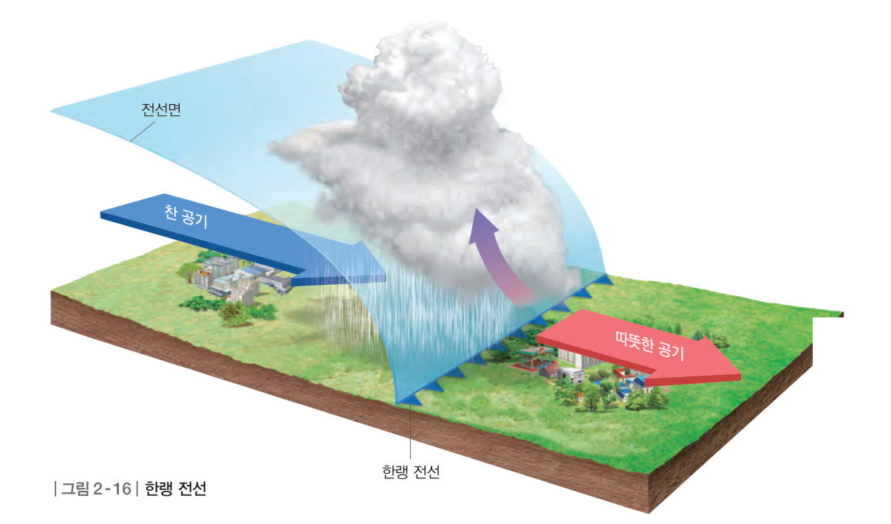
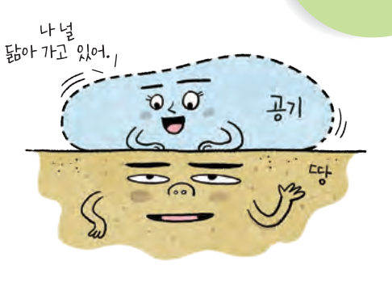
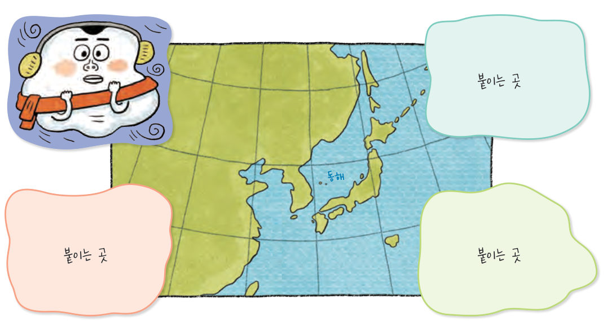
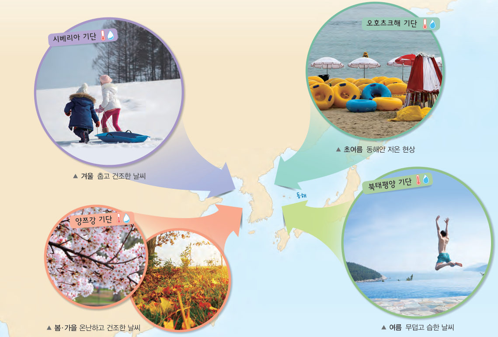
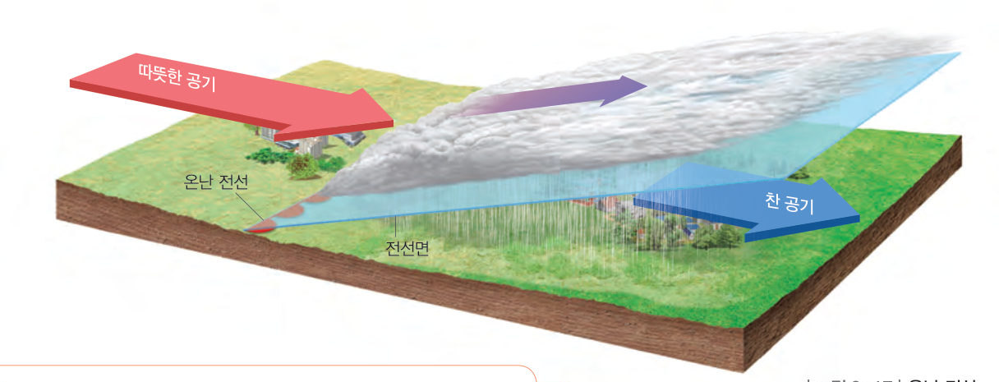

공기 덩어리가 한곳에 오래 머물러 있으면 어떻게 될까? 우리나라 주변 기단의 성질을 정리하고, 찬물과 따뜻한 물 실험과 3D 전선 모형으로 한랭 전선과 온난 전선의 구조를 돌려 보며 비교해 보자.
공기가 대륙이나 해양과 같은 넓은 장소에 오랫동안 머물러 있으면 지표의 영향을 받는다. 그 결과 기온과 습도 등의 성질이 지표와 비슷한 큰 공기 덩어리가 만들어지는데, 이를 기단이라고 한다.

| 시베리아 기단 (고위도 대륙) | |
| 양쯔강 기단 (저위도 대륙) | |
| 북태평양 기단 (저위도 해양) | |
| 오호츠크해 기단 (고위도 해양) |
기단의 성질은 만들어진 장소의 성질에 따라 달라진다. 고위도 지역에서 만들어진 기단은 기온이 낮고, 저위도 지역에서 만들어진 기단은 기온이 높다. 대륙에서 만들어진 기단은 건조하고, 해양에서 만들어진 기단은 습하다.
기단은 세력이 강해지거나 약해지면서 주변 지역의 날씨에 영향을 준다. 겨울에는 시베리아 기단의 영향으로 춥고 건조한 날씨가 나타난다. 여름에는 북태평양 기단의 영향으로 무덥고 습한 날씨가 이어진다. 봄과 가을에는 양쯔강 기단의 영향으로 온난하고 건조한 날씨가 나타나며, 초여름에는 오호츠크해 기단의 영향으로 동해안 지역에서는 저온 현상이 나타나기도 한다.

| 겨울 — 춥고 건조한 날씨 | |
| 봄·가을 — 온난하고 건조한 날씨 | |
| 초여름 — 동해안 저온 현상 | |
| 여름 — 무덥고 습한 날씨 |
이와 마찬가지로 성질이 다른 두 기단이 만나면 잘 섞이지 않고 경계면이 생긴다. 이 경계면을 전선면이라 하고, 전선면과 지표면이 만나서 이루는 경계선을 전선이라고 한다.
한랭 전선은 찬 공기가 따뜻한 공기 쪽으로 이동하여 따뜻한 공기 아래로 파고들며 만들어지는 전선이다. 한랭 전선에서는 전선면의 기울기가 급하고, 적운형 구름이 만들어지며 좁은 지역에 소나기성 비가 내린다.
온난 전선은 따뜻한 공기가 찬 공기 쪽으로 이동하여 찬 공기 위로 올라가며 만들어지는 전선이다. 온난 전선에서는 전선면의 기울기가 완만하고, 층운형 구름이 만들어지며 넓은 범위에 걸쳐 지속적인 비가 내린다.

| 구분 | 한랭 전선 | 온난 전선 |
|---|---|---|
| 전선면의 기울기 | 급함 | |
| 구름의 종류 | 층운형 구름 | |
| 강수 특징 | 소나기성 비 | 지속적인 비 |
| 비가 내리는 곳 | ||
| 이동 속도 | 느림 |
전선을 경계로 기온, 습도 등이 크게 달라지기 때문에 전선이 통과하는 지역은 날씨가 크게 변한다. 한랭 전선은 온난 전선보다 이동 속도가 빠르다. 시간이 지나 두 전선이 겹쳐지면 폐색 전선이 된다. 한편, 세력이 비슷한 두 기단이 한곳에 오래 머무르면 정체 전선이 만들어진다. 우리나라에서는 여름에 북태평양 기단이 세력을 확장하면서 북쪽의 찬 기단과 만나 오랫동안 머물면 넓은 지역에서 많은 비가 내린다.
| ⑴ 기단은 기온과 습도 등이 지표와 비슷해진 거대한 공기 덩어리이다. | |
| ⑵ 해양에서 발생한 기단은 습도가 낮다. | |
| ⑶ 저위도에서 발생한 기단은 기온이 높다. | |
| ⑷ 기단의 성질은 절대 변하지 않는다. |
| ㉠ | |
| ㉡ | |
| ㉢ | |
| ㉣ |
| ⑴ 세력이 비슷한 두 기단이 한곳에 오래 머무르면 만들어지는 전선 | |
| ⑵ 따뜻한 공기가 찬 공기 위로 올라가며 만들어지는 전선 | |
| ⑶ 한랭 전선과 온난 전선이 겹쳐져 만들어지는 전선 | |
| ⑷ 찬 공기가 따뜻한 공기 아래로 파고들며 만들어지는 전선 |
| 평가 기준 | 스스로 평가 |
|---|---|
| 기단의 개념을 이해하고 우리나라 주변 기단의 특징을 설명할 수 있다. | |
| 전선의 개념을 이해하고 전선의 종류와 특징을 설명할 수 있다. |